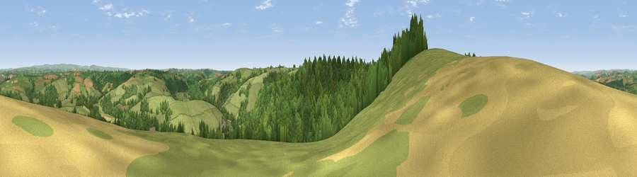

Viewpoint near High Bickington
#10664 in England · top 17% of its area beats it · near High BickingtonThe view, rendered

A 360° render of this exact spot computed from the terrain model, tree cover and land cover — summer colours, afternoon light, calibrated against photographs of famous viewpoints. Real trees, hedges and buildings will differ in detail.
The panorama
Grey silhouette: terrain skyline in each direction (720 bearings, Earth curvature and refraction included). Dashed green: skyline with trees (+15 m) and buildings (+8 m) as obstacles. Blue strip: how far the ground is visible on each bearing.
Where the view opens
Wedge length = distance to the farthest visible ground on that bearing (vegetation-aware). Rings at 10, 25 and 50 km.
What fills the view
60% grassland · 34% woodland · 5% cropland
Angular shares of the visible panorama (visual magnitude), not map area. Landscape diversity 0.37 (0–1 Shannon).
Key numbers
More beautiful places nearby
The staircase of upgrades: each row has a higher view potential than everything closer. Driving times are estimates from straight-line distance, calibrated against real road routing — check an actual route before setting out.
| Place | Direction | Drive | Score |
|---|---|---|---|
| Viewpoint near Burrington | SE · 3 km | ~7 min | 66.4 |
| Yollacombe Hill | NNE · 9 km | ~18 min | 70.2 |
| Viewpoint near High Bullen | W · 9 km | ~18 min | 71.2 |
| Viewpoint near Landkey | NNW · 9 km | ~18 min | 74.0 |
| Codden Hill | NNW · 10 km | ~19 min | 81.3 |
| Viewpoint near Parkham | W · 23 km | ~38 min | 81.7 |
| Viewpoint near Bucks Mills | W · 24 km | ~40 min | 84.0 |
| Viewpoint near Woolacombe | NW · 27 km | ~43 min | 84.7 |
50.96521, -3.97335 · source: screening · position refined by local search. Computed location — check access rights before visiting.